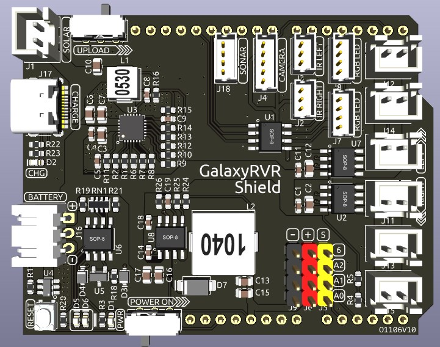
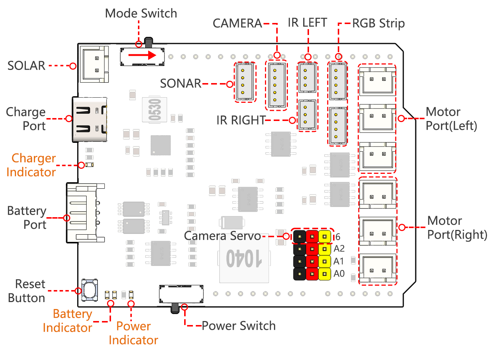
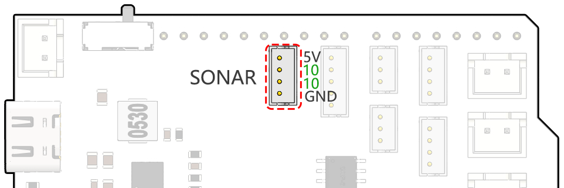
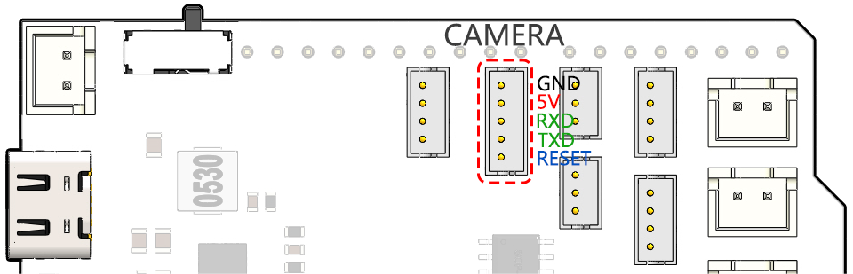
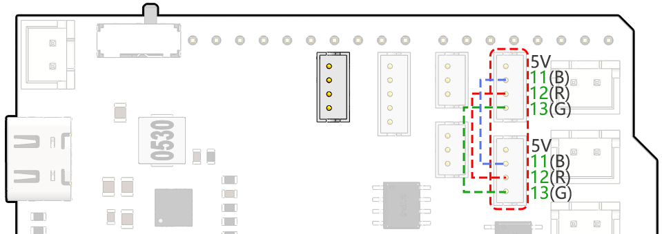

Note
Hello, welcome to the SunFounder Raspberry Pi & Arduino & ESP32 Enthusiasts Community on Facebook! Dive deeper into Raspberry Pi, Arduino, and ESP32 with fellow enthusiasts.
Why Join?
Expert Support: Solve post-sale issues and technical challenges with help from our community and team.
Learn & Share: Exchange tips and tutorials to enhance your skills.
Exclusive Previews: Get early access to new product announcements and sneak peeks.
Special Discounts: Enjoy exclusive discounts on our newest products.
Festive Promotions and Giveaways: Take part in giveaways and holiday promotions.
👉 Ready to explore and create with us? Click [here] and join today!
GalaxyRVR Shield
{kind=link}

This is an all-in-one expansion board designed for Arduino by SunFounder, which contains various module ports such as motor, RGB strip, obstacle avoidance, grayscale, ESP32 CAM and ultrasonic module.
This expansion board also has a built-in charging circuit, which can charge the battery with PH2.0-3P interface, and the estimated charging time is 130 minutes.
Pinout

- Charge Port
After plugging into the 5V/2A USB-C port, it can be used to charge the battery for 130min.
- Battery Port:
6.6V~8.4V PH2.0-3P power input.
Powering the GalaxyRVR Shield and Arduino board at the same time.
- Reset Button
Press this button to reset the program on the Arduino board.
- Indicators
Charge Indicator: Glows red when the shield is charging through the USB-C port.
Power Indicator: Glows green when the power switch is in the “ON” position.
Battery Indicator: Two orange indicators represent different battery levels. They flash during charging and turn off when the battery needs charging.
- Power Switch
Slide to ON to power on the GalaxyRVR.
- Camera Servo
The servo on the camera is connected here.
The brown wire connects to “-”, the red wire connects to “+”, and the yellow wire connects to Pin 6.
- Motor Port
Motor Port(Right): 3 motors can be connected, but all 3 motors are controlled by the same set of signal pins 2 and 3.
Motor Port(Left): 3 motors can be connected, but all 3 motors are controlled by the same set of signal pins 4 and 5.
Port Type: XH2.54, 2P.
- RGB Strip
For connecting 2 RGB LED Strips, the three pins of the strip are connected to 12, 13 and 11 respectively.
Port Type: ZH1.5, 4P.
- LEFT/RIGHT IR
Used for connecting two IR obstacle avoidance modules.
The left obstacle avoidance module is connected to pin 8, the right obstacle avoidance module is connected to pin 7.
Port Type: ZH1.5, 3P.
- CAMERA
The Camera Adapter Board port.
Port Type: ZH1.5, 5P.
- SONAR
To connect the ultrasonic module, both Trig & Echo pins are connected on pin 10 of the Arduino board.
Port Type: ZH1.5, 4P.
- Mode Switch
The ESP32-CAM and the Arduino board share the same RX (receive) and TX (transmit) pins.
So, when you’re uploading code, you’ll need to toggle this switch to the right side to disconnect the ESP32-CAM to avoid any conflicts or potential issues.
When you need to use the camera, toggle this switch to the left side so that the ESP32-CAM can communicate with the Arduino board.
- SOLAR
This is the port for the solar panel, which can charge the battery when plugged into the solar panel.
Port Type: XH2.54, 2P.
SONAR
This is the pinout for the ZH1.5-4P ultrasonic port, with the Trig & Echo pins connected to pin 10 of the Arduino board.

CAMERA
The camera adapter interface pin diagram is shown here, the type is ZH1.5-7P.
TX and RX are used for ESP32 CAM.

LEFT/RIGHT IR
These are the pins for the left and right obstacle avoidance modules.

RGB Strip
Below is the pinout diagram of the two RGB LED Strip, they are connected in parallel and the pinouts are the same.

Motor Port
Here is the pinout of the 2 sets of motor ports.